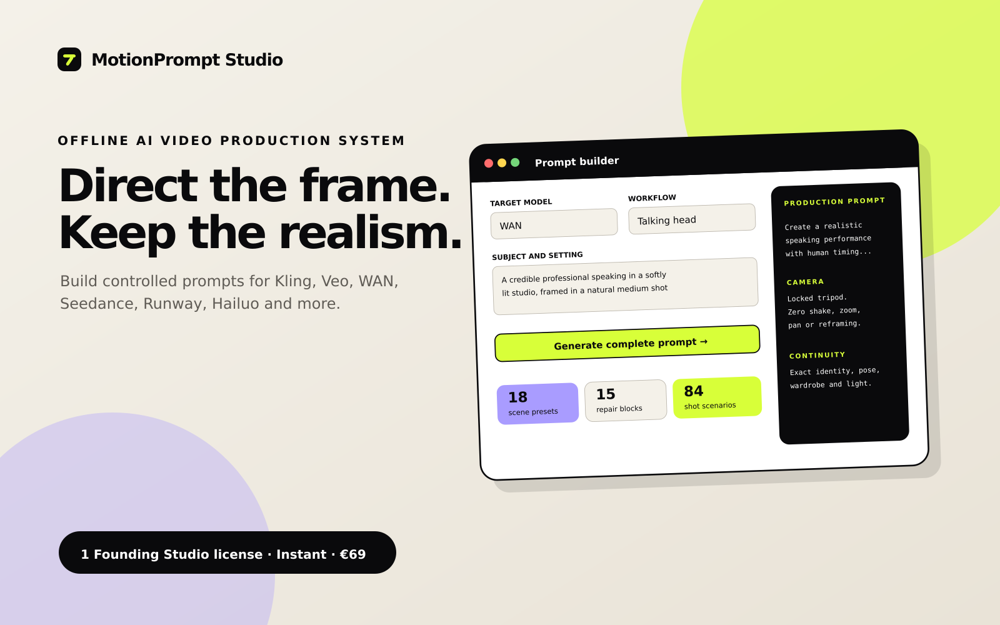
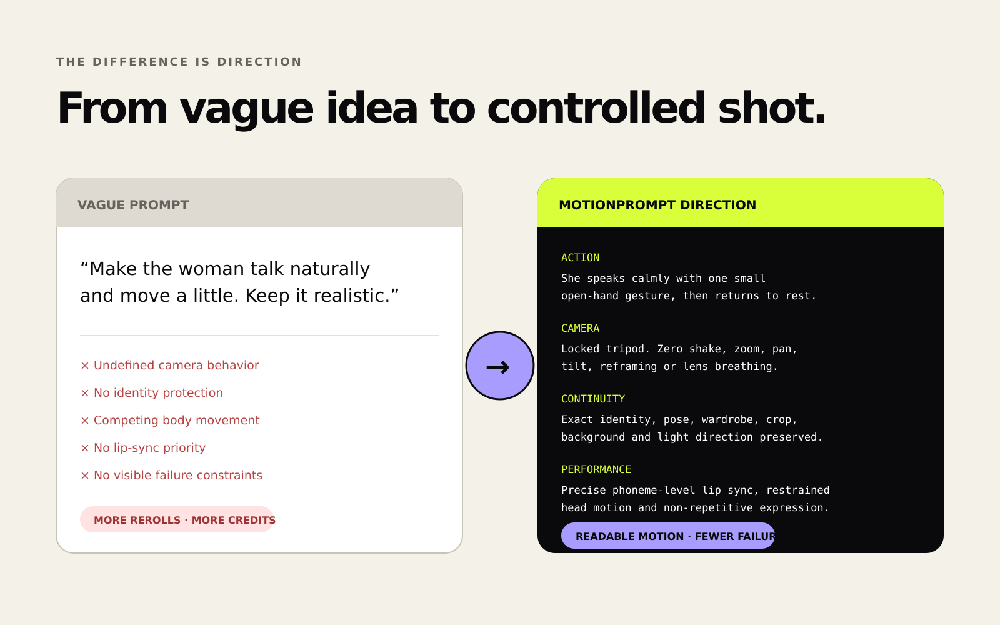
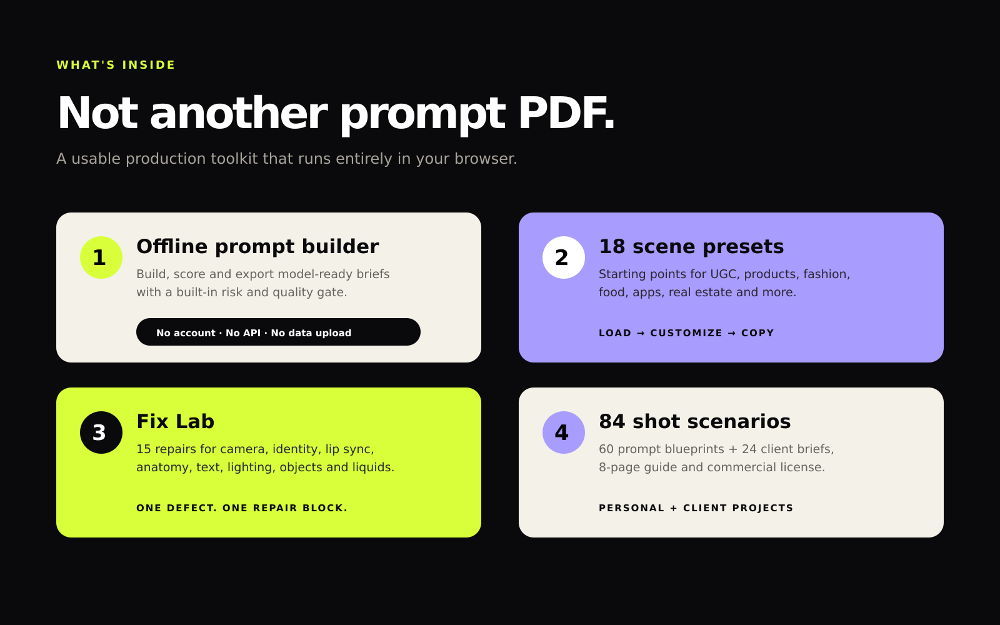
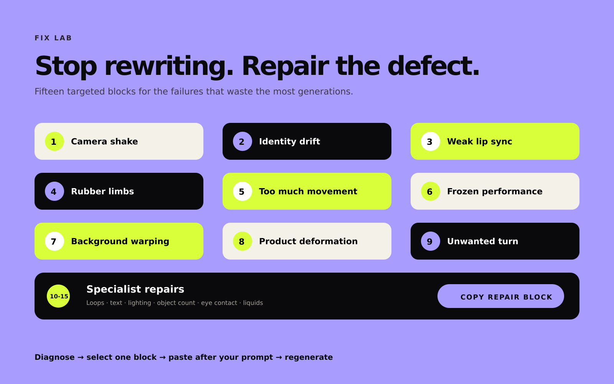

Build with hierarchy
Separate scene, action, camera, performance and negative direction instead of overloading one paragraph.
AI-video production system · Runs offline
Turn a rough shot idea into a structured, model-aware production brief. Catch competing instructions before generation, then repair the failure you can actually see.
€69 before applicable local tax · Instant digital delivery · No subscription

Direction tuned for
The expensive part is often the brief
When scene, motion, camera, performance and continuity compete inside one paragraph, the model is forced to guess. MotionPrompt Studio gives every instruction a job.
INPUT
“A cinematic close-up of a woman holding a skincare bottle, moving naturally, beautiful light, camera moving around her, realistic, no glitches.”
Locked identity, direct eye contact, product held label-forward at sternum height.
One controlled wrist rotation over 2 seconds; shoulders and head remain stable.
85 mm close-up, locked tripod, no orbit, no reframing, no focus breathing.
Preserve logo geometry, cap shape, finger count, grip and bottle scale throughout.
Production ReadinessReady to test

One local toolkit, three production stages
Separate scene, action, camera, performance and negative direction instead of overloading one paragraph.
Use the Production Readiness score and risk scan to find missing or competing direction before spending a run.
Add focused blocks for identity drift, camera shake, warped products, broken loops and eleven other visible failures.

Targeted fixes, not prompt soup
Fix Lab includes copy-ready direction for camera shake, identity drift, lip sync, anatomy, motion intensity, background warping, product deformation, unwanted turns, broken loops, text drift, lighting flicker, object counts, eye contact and liquid physics.

Inside the download
60 blueprints across 12 categories plus 24 client-ready campaign briefs.
Starting points for product, UGC, cinematic, loop and performance shots.
Focused interventions for the failures that consume extra generations.
Direction tailored for major text-to-video and image-to-video workflows.
Instant digital delivery
index.html and start building.Works in a current Chrome, Edge, Safari or Firefox browser on Windows, macOS or Linux. No installation, sign-up or recurring payment.
Built for repeatable work
Turn creative intent into explicit camera, movement and continuity instructions.
Protect geometry, logo orientation, object counts and product scale across the shot.
Export readable briefs that can be reviewed, revised and reused across client work.
Before you buy
No. It builds, checks and exports production direction for use in AI-video platforms. Model access and generation costs are not included.
No. The toolkit runs locally in a current desktop browser and does not upload your prompts.
Yes. The Founding Studio license permits personal work, monetized content and client output. The toolkit itself may not be shared, resold or redistributed.
No specific generated result is guaranteed. AI-model behavior varies. The toolkit is designed to make direction clearer and risks easier to spot before testing.
The offline builder, 18 presets, 15 Fix Lab blocks, 60 blueprint prompts, 24 campaign briefs and an 8-page visual guide.
Founding Studio Edition
One-time purchase. Instant digital delivery through Gumroad.
Get MotionPrompt Studio — €69 Applicable local tax is calculated by Gumroad at checkout.